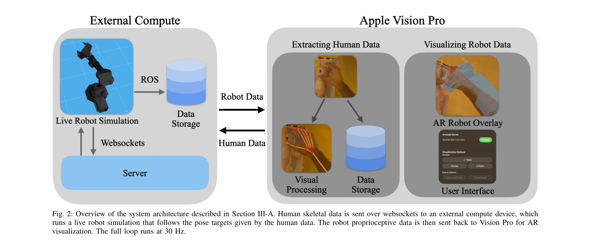

Essence

Fig. 1: Overview. (A) Human demonstrators wearing Apple Vision Pro can
Apple Vision Pro의 AR을 활용하여 물리적 로봇 없이 로봇 조작 데이터를 수집하는 ARMADA 시스템을 제시하며, 실시간 로봇 피드백이 데이터 품질을 1.3%에서 71.1%로 향상시킨다.
저자: Nataliya Nechyporenko, Ryan Hoque, Christopher Webb, Mouli Sivapurapu, Jian Zhang | 날짜: 2024-12-14 | URL: https://arxiv.org/abs/2412.10631
Fig. 1: Overview. (A) Human demonstrators wearing Apple Vision Pro can
Apple Vision Pro의 AR을 활용하여 물리적 로봇 없이 로봇 조작 데이터를 수집하는 ARMADA 시스템을 제시하며, 실시간 로봇 피드백이 데이터 품질을 1.3%에서 71.1%로 향상시킨다.
Fig. 1: Overview. (A) Human demonstrators wearing Apple Vision Pro can

Fig. 2: Overview of the system architecture described in Section III-A. Human skeletal data is sent over websockets to a
총평: ARMADA는 AR 기술을 창의적으로 활용하여 로봇 데이터 수집의 실제적 병목을 해결하는 혁신적 시스템을 제시하며, 실시간 피드백의 극적인 효과를 실증함으로써 대규모 로봇 학습의 새로운 가능성을 열었다.